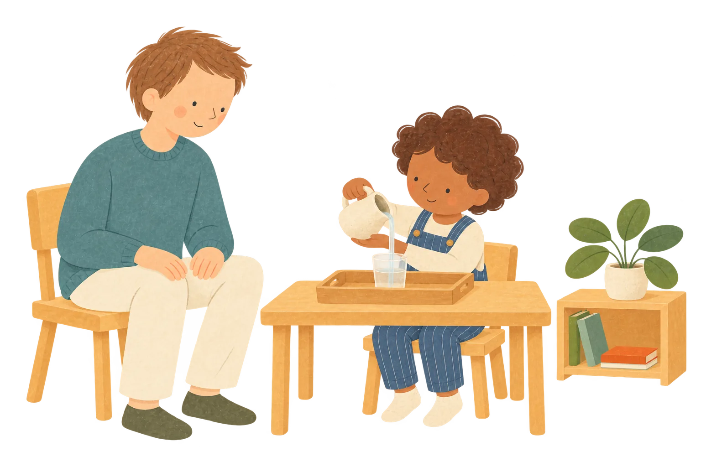
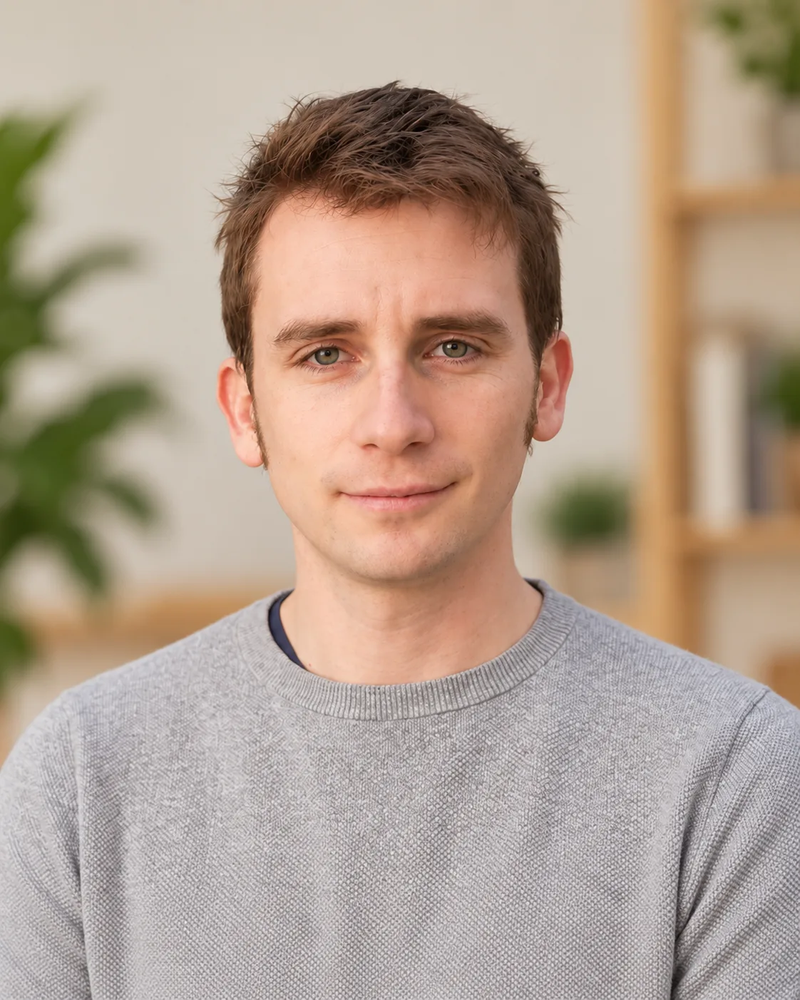
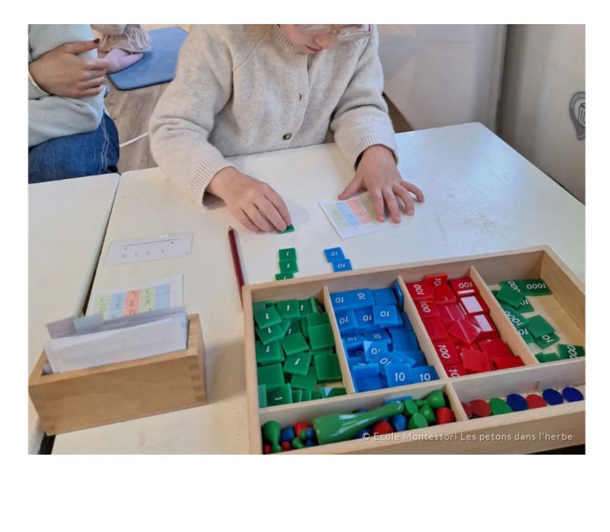
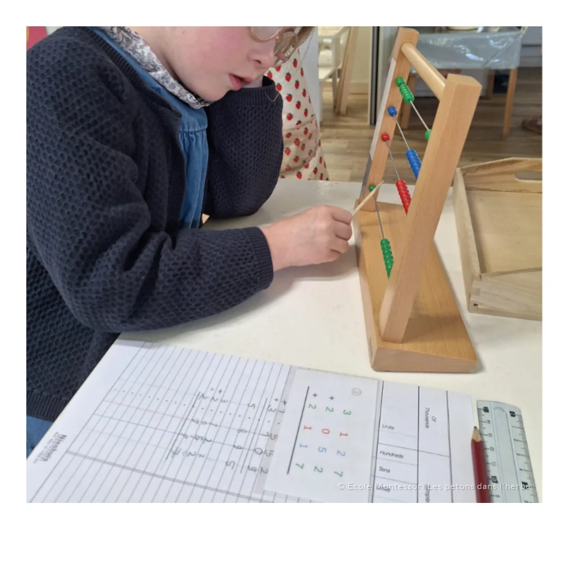
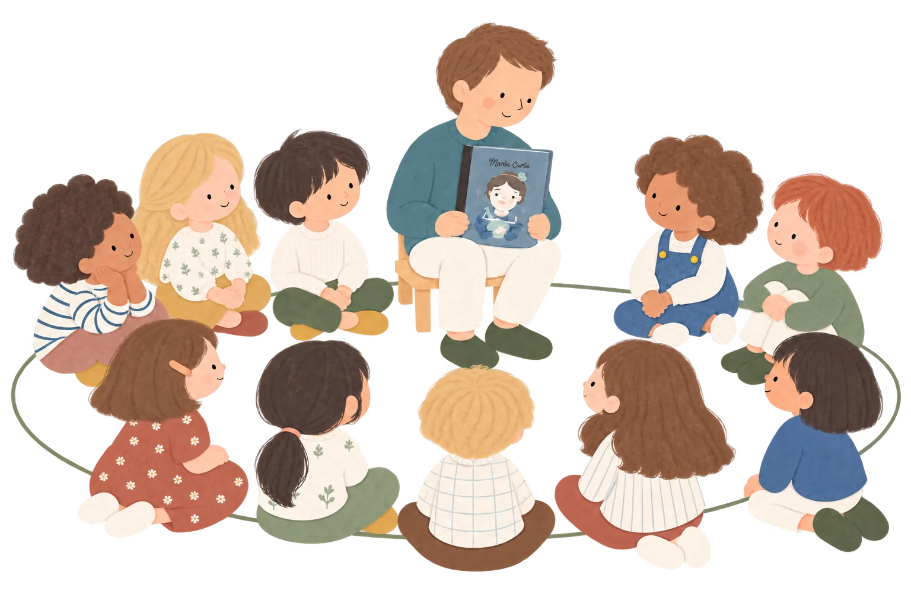
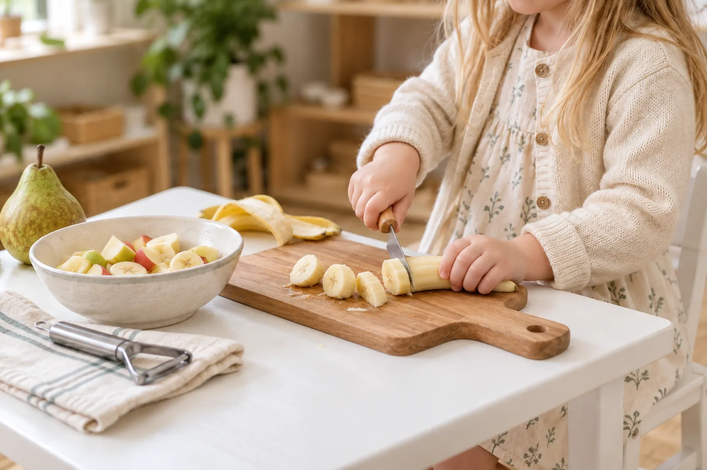
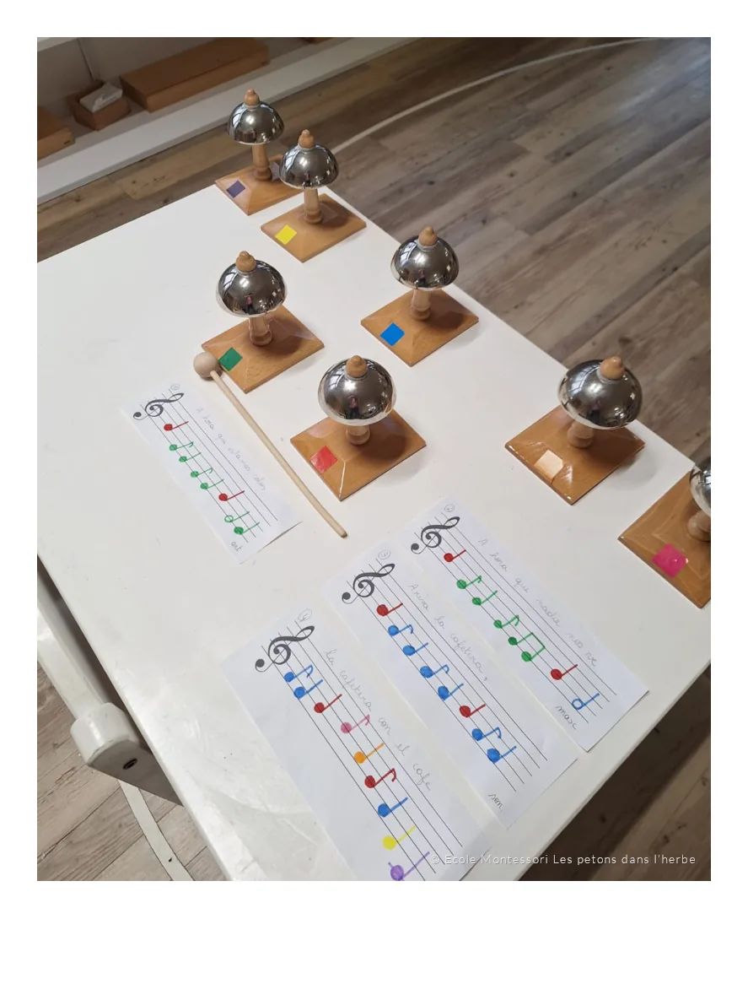
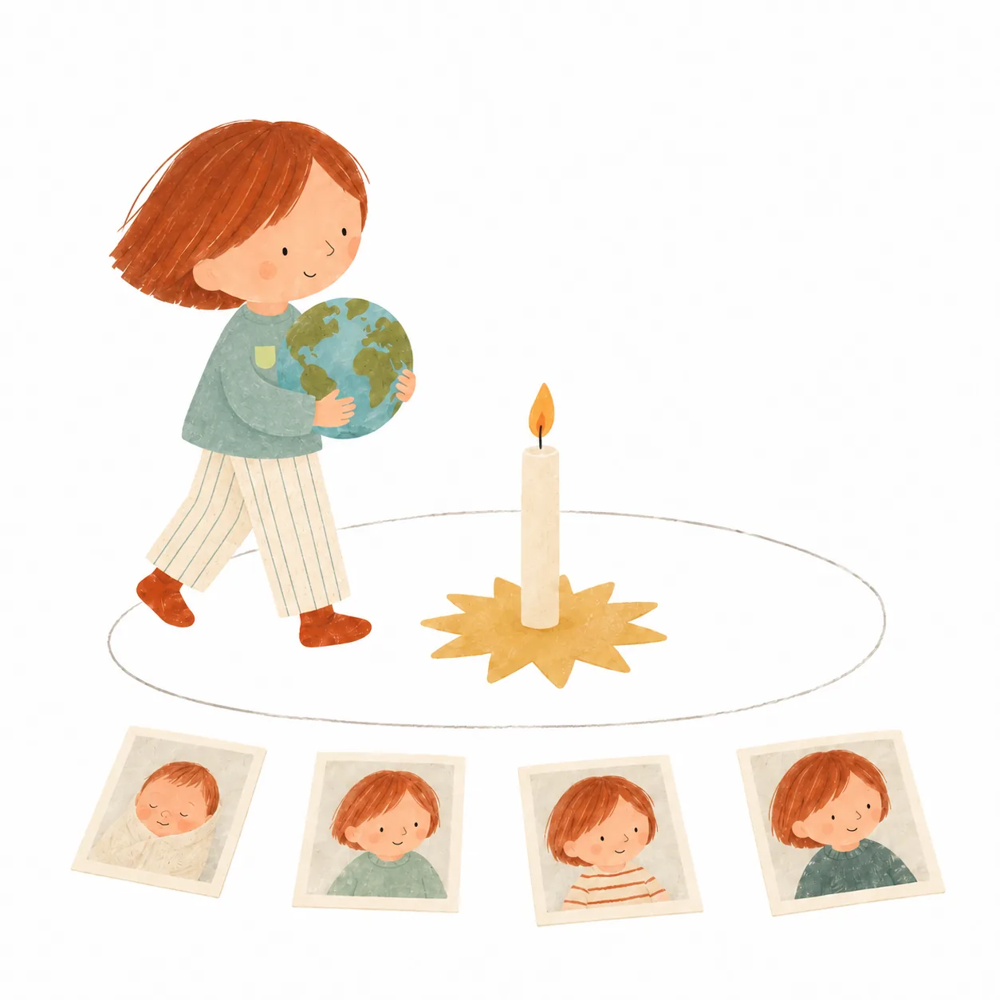
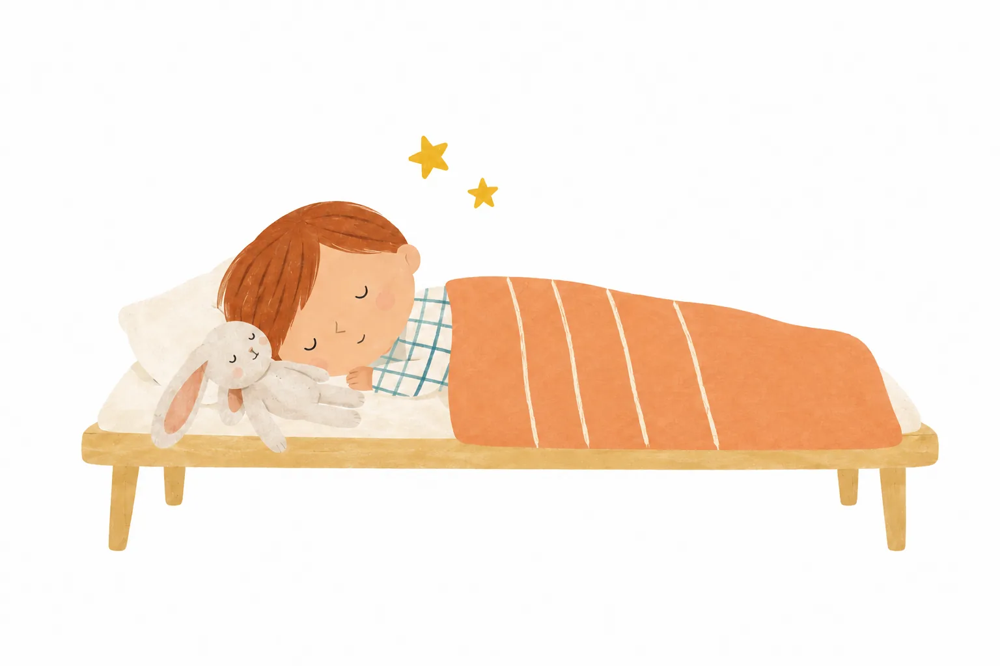

Vie pratique
Verser, transvaser, nettoyer : coordonner ses gestes et prendre soin de soi et de son environnement.
« Je veux faire seul. »
Choisir une activité, observer un geste, essayer et recommencer : chez les Chenilles, les petites expériences du quotidien deviennent de grandes découvertes.
Auprès d’Antoine, dans une ambiance multi-âges adaptée aux enfants, chacun avance à son rythme, construit ses repères et découvre le plaisir de faire par lui-même.
Entrer dans leur quotidien
Se sentir accueilli.
Oser essayer et apprendre.
Antoine a à cœur que chaque enfant se sente en sécurité, accueilli et en confiance. Cette sécurité lui permet peu à peu d’oser une nouvelle activité, de se tromper, de recommencer et de découvrir ce dont il est capable.
Son objectif : que chacun progresse à partir de là où il en est, gagne en autonomie, développe son langage et apprenne à vivre avec les autres, tout en gardant le plaisir d’apprendre. Les enfants peuvent donc avancer dans des activités différentes au même moment.
Antoine observe, encourage et propose des situations adaptées. Il présente un matériel, accompagne une difficulté, puis laisse à l’enfant la place de chercher et de réussir par lui-même.
Découvrir Antoine et l’équipe éducative
AutonomieEssayer et faire
par soi-même.
CoopérationTrouver sa place
avec les autres.
CuriositéObserver, explorer
et poser des questions.
Plaisir d’apprendreGarder l’envie
de découvrir.
Un enfant s’exerce à transvaser de l’eau ou à cirer des chaussures ; un autre explore les sons et les lettres ; plus loin, un enfant apprend à compter avec les perles. À 3, 4, 5 ou 6 ans, chacun progresse à son rythme.
Le matériel Montessori, particulièrement riche aux Petons, accompagne cette progression. Présenté par l’éducateur, il permet d’explorer une notion concrètement et de la reprendre autant que nécessaire.


Toucher, essayer.
Donner du sens à ce que l’on apprend.
Verser, transvaser, nettoyer : coordonner ses gestes et prendre soin de soi et de son environnement.
Explorer les formes, les dimensions, les couleurs et les sons. Comparer, distinguer, affiner ses perceptions.
Parler, écouter, raconter, comprendre et enrichir son vocabulaire. Explorer les sons et les lettres pour cheminer vers l’écriture et la lecture.
Compter, comparer, reconnaître des quantités et aborder le système décimal grâce au matériel.
Découvrir le vivant, les objets et la matière ; construire des repères dans le temps, l’espace et la nature.
Dessiner, manipuler, chanter, danser et explorer son corps. Chaque lundi, 30 minutes sont consacrées à la motricité et au sport.
Un même objectif : permettre à chacun de progresser à partir de là où il en est.
Antoine encourage les enfants à faire par eux-mêmes, même lorsque cela demande davantage de temps. Il ajuste son aide pour que chacun puisse, peu à peu, réussir seul.
Choisir une activité, se préparer pour sortir ou participer au repas : l’autonomie se construit dans les gestes de tous les jours.
Savoir demander de l’aide fait aussi partie de l’autonomie.
À 3, 4 ou 5 ans, attendre, partager et accepter une frustration s’apprennent encore. Les petits conflits font partie de cet apprentissage.
Antoine accompagne les enfants pour mettre des mots sur ce qui s’est passé, exprimer leurs émotions et écouter l’autre, puis chercher une solution ensemble.
Lorsqu’une situation dépasse un simple conflit ou met la sécurité en jeu, Antoine intervient immédiatement.
Dire ce qui s’est passé et ce que l’on ressent.
Écouter l’autre et son point de vue.
Chercher ensemble une solution.

Les regroupements sur l’ellipse ponctuent la journée : lire une histoire, écrire la date, chanter une comptine, échanger sur un sujet ou revenir sur un événement vécu ensemble.
Les enfants peuvent aussi apporter quelque chose qu’ils souhaitent présenter. Raconter sa découverte au groupe, être écouté et répondre aux questions nourrit l’aisance à l’oral et la confiance en soi.

La collation du matin est une activité à part entière. Préparer les fruits et les légumes, les découper, les répartir, puis nettoyer et ranger : chaque étape permet de faire par soi-même et de contribuer à la vie du groupe.
Présenter la collation aux autres est aussi une source de fierté : l’enfant voit ce que ses gestes apportent à tous.
Chaque lundi, une famille apporte des fruits et légumes de saison en quantité suffisante pour 4 collations dans la semaine.
Sortir les ingrédients et le matériel, préparer la pâte, puis nettoyer et remettre chaque chose à sa place : faire le pain est une activité complète, qui peut occuper une grande partie de la matinée des plus petits.
Le temps de préparer compte autant que le résultat.
La collation et les repas en pratiqueUne place pour les sons.
Une place pour la sensibilité.
Chaque vendredi à 10h15, les Chenilles se retrouvent pour une session musicale : éveil au rythme, découverte des familles d’instruments et exploration des sons. La musique se découvre aussi grâce au matériel de l’ambiance, notamment les clochettes.
Ces ressources font partie des investissements importants réalisés par l’école pour offrir aux enfants un environnement riche, jusque dans les découvertes musicales.
Découvrir la place de la musique aux Petons
Pour célébrer son anniversaire, l’enfant tient le globe terrestre et fait le tour de l’ellipse autour d’une bougie qui représente le Soleil.
Chaque tour évoque une année de sa vie. Le groupe accompagne ce moment en chantant, et les photos permettent de retrouver les étapes de son histoire, de la naissance jusqu’à l’âge fêté.
C’est aussi l’occasion de partager un gâteau fait maison, apporté par l’enfant qui fête son anniversaire.

Les besoins de sommeil et de récupération varient avec l’âge et d’un enfant à l’autre. Une salle de sieste indépendante de l’ambiance permet à ceux qui en ont besoin de se reposer au calme.
À 13h00, Antoine accompagne les dormeurs à la sieste. Les réveils se font progressivement, jusqu’à 15h15 maximum. Les enfants quittent librement la salle une fois réveillés et peuvent reprendre une activité s’il reste du temps.

Lundi, mardi,
jeudi et vendredi
Le lundi · 30 minutes de motricité et de sport.
Le vendredi à 10h15 · session musicale.
Fin du périscolaire du matin et arrivée dans l’ambiance.
Activités en autonomie pour certains, présentations pour d’autres.
Fin du premier temps d’activité : date du jour, comptines, chants et histoires.
Les enfants sortent pendant que les repas sont réchauffés.
Les non-dormeurs retrouvent l’ambiance. Les autres les rejoignent au fil des réveils, jusqu’à 15h15 maximum.
Fin du second temps d’activité : présentations de travaux, chants, comptines, histoires ou échange sur la journée.
Départ des enfants non inscrits au périscolaire du soir.
Les enfants encore présents rejoignent l’accueil du soir.
Lors du passage de l’ambiance 3–6 ans à l’ambiance 6–12 ans, l’envie de faire par soi-même s’ouvre à de nouvelles questions. L’enfant veut comprendre les liens, chercher des raisons et explorer le monde.
Découvrir Les Papillons · 6–12 ans« Je veux faire seul. »
« Je veux comprendre le monde. »
Visiter l’ambiance, rencontrer l’équipe
et prendre le temps de parler de votre enfant.